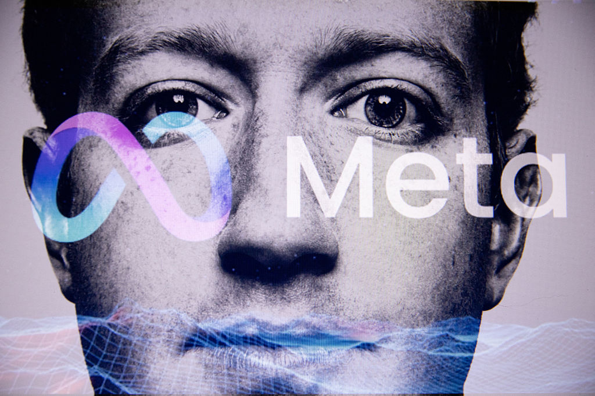

N°17 中國否決 Meta-Manus $2B 案 · AI 跨境併購窗口正式關上

Pin · 表面是反壟斷否決，底層是中美 AI 戰略資產脫鉤的最高層級訊號。
發生什麼
TechCrunch 與路透同時報導，中國市場監管總局經數月深度審查後，正式否決 Meta 對中國 AI Agent 新創 Manus 的 $2B 收購案。Manus 是 2025 年下半年崛起的中文 Agent 平台，主攻政企場景的多步驟自動化，Meta 在去年底以「補強 Llama 系列在中文 agentic workload 的薄弱環節」為由公開推進收購。HN 上 198 分熱議，評論集中在「這是早就該否決」與「中國反壟斷終於用在科技股」兩條對立軸線。
否決理由分為三條：第一，AI Agent 已被歸類為涉及國家數據安全的關鍵技術；第二，Manus 客戶結構含有大量央國企與地方政府，跨境股權移轉觸發審查紅線；第三，Meta 在過去兩年於中國的廣告與通訊業務「市場行為審查」並未通過，被視為前提條件未滿足。Meta 必須在 60 天內拆除已執行的條款，包含人才借調、聯合研究與資料訪問。
為什麼重要
第一，AI Agent 在中國正式進入「戰略產業」清單。過去兩年中國對半導體、量子、生物科技已有外資審查機制。Manus 案是首次把 AI Agent 級的應用層公司納入相同框架。意義不在 Meta 損失了什麼，而在於後續所有外資對中國 Agent、模型微調、垂直應用公司的併購提案，都會默認踩到紅線。
第二，Meta 的 Agent 戰略短期沒有 plan B。Zuckerberg 過去 12 個月把 agentic 作為 Llama 系列重點打的方向，中文場景一直是缺口。失去 Manus 等於失去最快補位的捷徑。Meta 接下來只剩兩條路：自建中文 agentic team，或繞道香港、新加坡、東南亞做華語 agent。前者要 18 個月以上、後者覆蓋深度有限。
我們的判斷
三個看點：
(1) 跨境 AI 併購視窗在 2026 年內基本關閉。OpenAI、Anthropic、Google 接下來想透過股權進入中國 AI 公司，幾乎沒有可能。反向也成立——中國 AI 公司想被美方收購，CFIUS 已經有預判。未來中美 AI 整併要走非股權路徑：人才招攬、IP 授權、合資公司，而且每一條都會被監管放慢。
(2) Manus 估值會被同業搶接盤。否決令並未禁止其他外資進入，只是禁止 Meta 收購。日資、中東主權基金、新加坡淡馬錫旗下、港資的策略性投資窗口仍開。Manus 估值的下一輪定價，會是中文 Agent 賽道的重要錨點。預期會有人在 90 天內出手。
(3) 美國對等反制是時間問題。過去三輪美國對中國科技公司的回應都是六個月內出招。FTC 與 CFIUS 預期會把現有對中國 AI 投資審查再加嚴一檔。對 Sequoia China、Hillhouse、五源等具雙邊資金結構的 VC，募資與退出兩端的窗口會同步收緊。
N°18 微軟與 OpenAI 解綁 · OpenAI 同日鎖死 AWS $50B 算力大單

Pin · 不只是合約變動，是 AI 雲端版圖的一次性結構洗牌。
發生什麼
Bloomberg 首發、TechCrunch 跟進、OpenAI 官方同步發布合作下一階段聲明：微軟與 OpenAI 終止獨家合作與營收分潤協議。微軟改拿一次性現金結算與股權升值，騰出 Anthropic 與自研模型的戰略空間。OpenAI 同日對外宣布與 Amazon Web Services 簽下 $50B 多年期合約，內容含算力購買、Trainium 加速器供應、產品在 AWS Marketplace 共同上架。HN 衝到 643 分 870 留言，是本月最大一次討論量。
合約細節值得拆解。微軟保留三件事：Azure 仍是 OpenAI 的優先雲端供應商之一、既有 OpenAI Service 客戶合約延續、過去投資的股權與利潤分成轉換為一次性結算與升值權利。OpenAI 換到三件事：可在 AWS、Oracle、自建資料中心拓展算力；可在非 Azure 平台直接銷售產品；新一輪估值有 multi-cloud 故事支撐。Amazon 拿到的是 OpenAI 第一線商品在 AWS Marketplace 上架，Trainium 與 Bedrock 直接受惠。
為什麼重要
第一，AI 雲端市場結構從「壟斷耦合」變成「多邊耦合」。過去三年的結構是 OpenAI ↔ Azure 與 Anthropic ↔ AWS 兩組強耦合，Google 自家 Gemini 在 GCP 自我消化。OpenAI 解綁後，AWS 同時是 Anthropic 與 OpenAI 的算力供應端，Azure 則同時放下 OpenAI、加碼 Anthropic 與自研。耦合被打散，下一輪 enterprise 採購的議價結構整盤重來。
第二，微軟的雙下注策略落地。過去 18 個月微軟對 Anthropic 的合作從邊緣觀察轉為實質採購，加上 MAI-1 系列自研模型的內部進度，這次解綁等於官方背書「微軟不再 OpenAI-only」。對企業客戶這是利多——Copilot 系列底層模型未來可能切換更頻繁、議價空間更大。對股東是中性偏多——一次性結算現金落袋。
我們的判斷
三個看點：
(1) Nvidia 短期最大受惠，AWS 中期最大受惠。$50B 合約裡有大塊是 GPU 採購，Nvidia 訂單能見度延長。但 Trainium 在 inference 場景的滲透會被這份合約大幅推進——OpenAI 在 AWS 上的 inference 工作負載一旦轉到 Trainium，AWS 自研晶片的市場份額會在 12 個月內躍升一個量級。
(2) Anthropic 的相對位置由「AWS 獨家」變成「AWS 共享」。失去獨家性看似負面，但實際上反而是利多——AWS 為了平衡 OpenAI 在平台上的曝光，必須給 Anthropic 更深的整合與更好的條款。Anthropic 的 multi-cloud（AWS + Google）故事下半年會更具體。
(3) 反壟斷會再追問一次。FTC 過去 12 個月已對 Microsoft-OpenAI 結構發 second-request。解綁本身緩解了一部分壟斷論點，但「微軟一次性現金結算 + 股權升值權」的條款細節，會被監管者拆開檢視——是否實質仍構成控制？這條尾巴會再拖 6 至 9 個月。
N°19 Ineffable Intelligence · AlphaGo 之父帶 $1.1B 押純強化學習路線

Pin · 不靠人類資料、純 self-play 訓練——這是 LLM 主流之外，被重新拿出來的另一條軸線。
發生什麼
TechCrunch 報導，DeepMind 元老 David Silver——AlphaGo 與 AlphaZero 的首席研究者——正式從 Google DeepMind 離職，創立位於倫敦的 AI lab「Ineffable Intelligence」。新公司以 $5.1B 估值募得 $1.1B，Sequoia Capital 與 Lightspeed Venture Partners 領投，跟投陣容含 Google Ventures、a16z、英國主權財富基金。創始團隊有 14 位 DeepMind 老兵，多數曾參與 AlphaGo 與 MuZero 系列。
Ineffable 的技術主張很明確：不依賴人類產生的資料訓練前沿模型，而是回到 AlphaZero 路線——用 self-play 與強化學習，從零開始讓模型在抽象任務空間中自我演化。Silver 在發布訪談裡用了「ineffable intelligence」這個詞——意指人類自己不知道、語言無法描述、卻能被 AI 自我發掘出來的能力。內部第一階段目標是把這條路線從棋盤（圍棋、將棋、Atari）擴展到通用推理場景。
為什麼重要
第一，LLM 訓練資料殆盡的壓力來到實體市場。過去 12 個月所有頂尖模型的訓練資料採購已經把可用語料推向天花板。版權訴訟、AI 訓練資料集合作協議、合成資料的可信度——三條都在受壓。Ineffable 把賽道分歧放到台面：「沒人類資料也能訓練前沿模型」一旦能在通用任務上跑通，整個 AI 產業的成本結構與版權格局會被重寫。
第二，DeepMind spinout 潮達到歷史新高。過去 24 個月已有 Inflection、Reka、Magic、Cognition 等多家由前 DeepMind 成員主導的公司獲大筆融資。Ineffable 的 $1.1B 是其中最大一筆，且帶有最明確的 thesis 差異化。Google 的內部研究員留任壓力會再上一層——對應的策略可能是更高的 retention package、或更開放的內部 spinout 機制。
我們的判斷
三個看點：
(1) 強化學習人才的薪酬議價權被拉高。過去兩年 frontier lab 的人才市場主軸是 LLM scaling、RLHF 與 alignment 三條線。Ineffable 把純 RL／self-play 的路線重新定價，相關背景的研究員——尤其是有 game playing、robotics 經驗的——薪酬區間在六個月內預期上調 20 至 40%。
(2) 評估這條路線的時間表大約 18 至 24 個月。AlphaZero 在棋類成功、MuZero 擴展到不完備資訊賽局，但跨到通用推理（語言、視覺、跨模態）尚未有公開可重現的成果。Ineffable 拿到 $1.1B 至少能撐到 2027 年中後段。中間任何一個 milestone（純 RL 訓練的小模型、完全合成資料的視覺模型、自我演化的 coding agent）都會是市場重新定價的觸發點。
(3) Anthropic 與 OpenAI 必須對外回應路線分歧。OpenAI 的 RLHF + 大規模人類偏好資料、Anthropic 的 Constitutional AI——兩家都倚賴大量人類介入。Ineffable 的成立逼出一個公開問題：「不靠人類偏好的 alignment 怎麼做？」這條問題的答案會決定 frontier lab 下一輪的研究敘事。
· 編輯台 · 明天 07:00 再見 ·